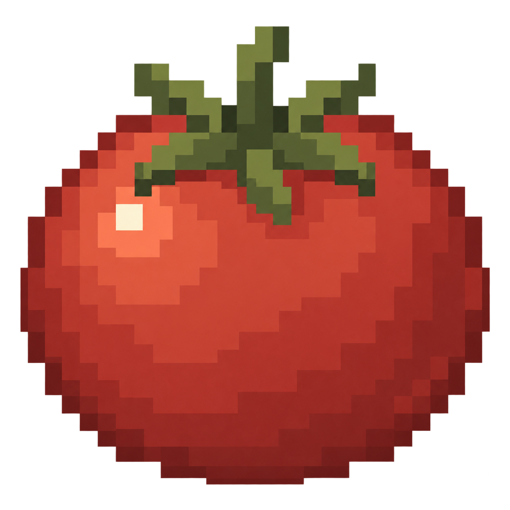

写下这一刻
给这段专注一个清晰的名字。设定大任务归属与细分标签，让当下的投入，日后也有迹可循。

TomatoBar Personal现已支持 macOS & Windows · V1.5.0
无声计时，随时暂停。
大任务层级拆解，还有桌宠番茄仔陪你专注。
macOS 12.3+ (Apple Silicon / Intel) · Windows 10/11 (x64)
v3.11.0 · MIT 开源 · 纯本地存储
给这段专注一个清晰的名字。设定大任务归属与细分标签，让当下的投入，日后也有迹可循。
在菜单栏静静计时，随时暂停或继续。到点以无声窗口提醒，跳过休息无缝衔接，陪你保持自己的节奏。
按日、周、月回顾专注记录。看见时间去了哪里，微观投入自动沉淀至大任务积累。
全新原生桌面伴侣 · macOS
全新重制的 8×9 @2x Retina 帧图集与 AppKit 原生伴侣，把番茄钟的每个节奏化作鲜活却不打扰的小动作：专注敲键盘、休息捧茶轻抿、暂停小憩、完成跃起欢呼。
175pt 会悄悄转眼看你，单击招手、待确认时直接轻点切入休息或下一轮。⌥ 随时临时拖动。切到「待机」并在画布旁移动指针，试试四向眼神跟随。
专注属于你，记录也是。
专注记录 100% 保存在本机。应用无网络请求，无商业遥测，
你的时间，无需交给别处。
TomatoBar Personal 是 MIT 开源项目。
源码与构建方式公开，你可以随时查看。
在安静中，积累每一段有意义的时间。
macOS 12.3+ · Windows 10/11 · v3.11.0
macOS 用户推荐下载 DMG；Windows 用户直接下载 .exe 安装包即可。
macOS：打开 DMG，把应用拖入 Applications 文件夹即可。
Windows：运行 setup.exe 安装向导，安装后打开即可。
两端均采用开源透明构建，数据完全保存在本机。如果 macOS 拦截 ad-hoc 首次打开，请参照下方的安全属性清除命令。
确认安装包来自本页的 GitHub 发布链接，并已放入 Applications。在终端执行以下命令后重新打开：
xattr -dr com.apple.quarantine "/Applications/TomatoBar Personal.app"谢谢你们在 TomatoBar Personal 起步时给予的信任。